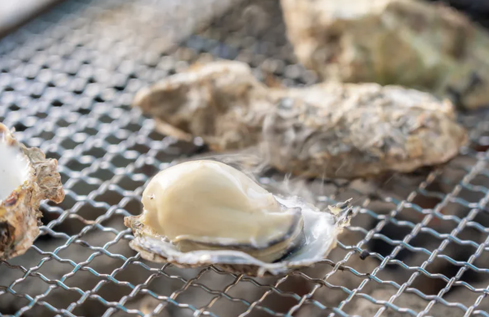
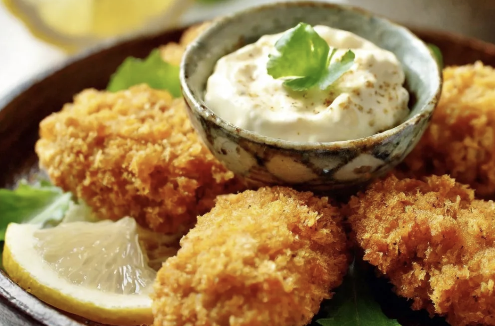
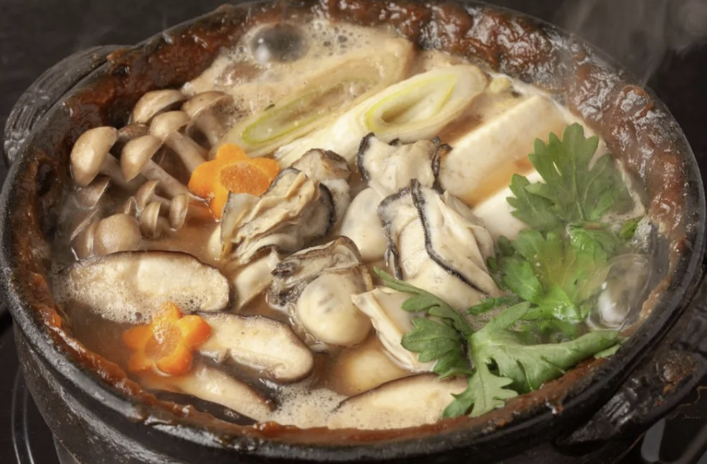
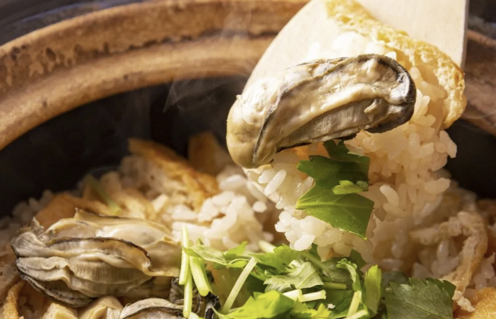

전국 제일의 생산량을 자랑하는 히로시마의 굴. 생으로 좋고, 굽고 좋고, 튀겨서 좋다!」라고, 어떤 요리로 해도 틀림없는 맛입니다. 일년 내내 즐길 수 있는 굴입니다만, 가장 몸이 좋은 겨울이 본격 시즌! 히로시마에서는 굴 오두막과 선술집, 먹거리 탐방 음식 등 곳곳에서 신선한 굴 요리를 즐길 수 있습니다.
히로시마 만은 파도가 조용하고 조수의 흐름도 적당하고 굴의 육성에 좋은 조건이 갖추어져 있습니다. 중국 산지에서 흐르는 풍부한 영양분이 강을 통해 운반되기 때문에 양질의 플랑크톤이 자라는 것이 맛있는 굴이 자라게 됩니다.
히로시마의 굴 양식의 역사는 낡아 무로마치 시대(400년 이상전)로부터 계속되고 있습니다. 오랜 역사 속에서, 히로시마 독자적인 간만차를 이용한 양식법이나, 최근에는 「카키코마치」와 같은 새로운 품종의 개발 등, 생산자들의 지혜와 기술이 계승되어 진화하고 있습니다.

전국적으로 인기의 이유는 그 맛은 물론 확실한 안전성에도 있습니다. 히로시마현은 독자적으로 조례를 정해, 식품 위생상의 안전 대책에 특히 힘을 쏟고 있습니다.

밖은 바삭바삭한 옷의 식감, 안에서는 사르르~ 맛있는 굴이 입 가득 퍼집니다.

추운 날에 무성하게 먹고 싶어지는 것이 굴나베! 냄비 안쪽에 된장을 바르고 생굴과 야채를 끓여서 먹는 히로시마 전통의 향토요리입니다.

굴의 삶은 국물을 사용하여 밥을 짓고 마무리에 통통 삶은 굴을 담는 것이 포인트. 별도로 요리하면 통통한 식감을 즐길 수 있습니다. 굴의 맛이 쌀 한 알 한 덩어리에 스며들어 맛은 일품!!